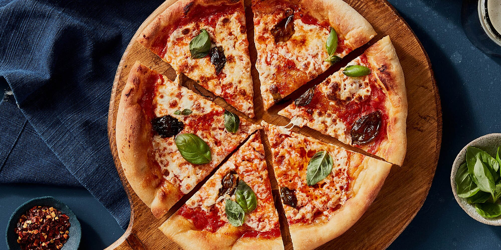

Eine Pizza ist ein vor dem Backen würzig belegtes Fladenbrot aus einfachem Hefeteig aus der italienischen Küche. Die heutige international verbreitete Variante mit Tomatensauce und Käse als Basis stammt vermutlich aus Neapel. 2017 wurde die neapolitanische Kunst des Pizzabäckers (Art of Neapolitan ‘Pizzaiuolo’) von der UNESCO in die repräsentative Liste des immateriellen Kulturerbes der Menschheit aufgenommen.
